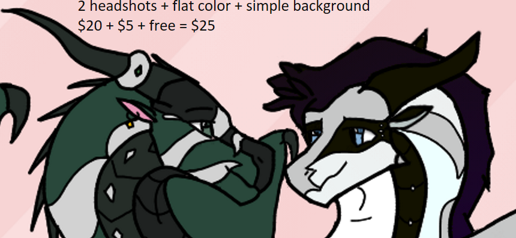
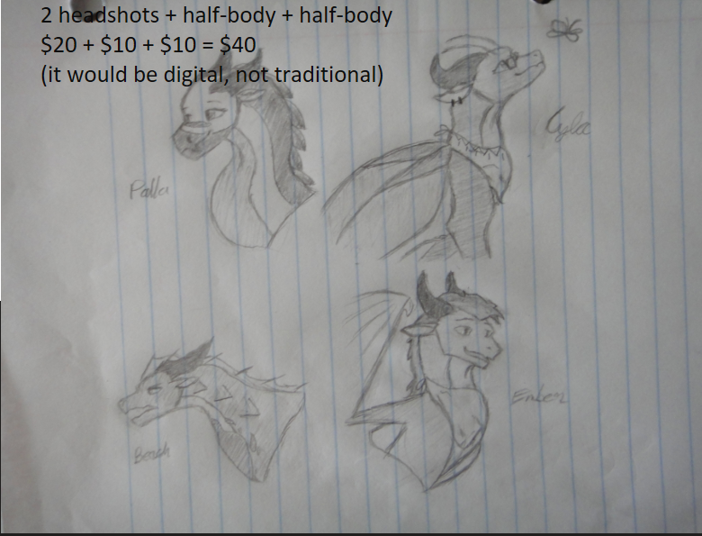
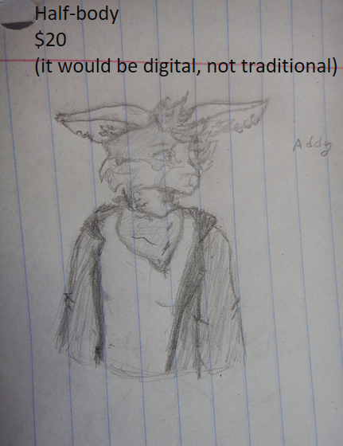
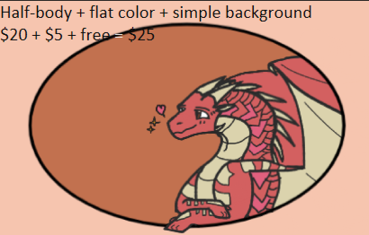
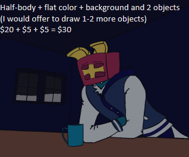
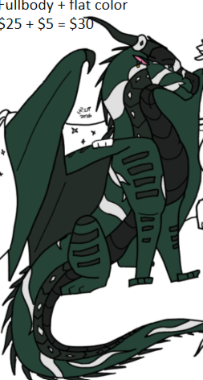
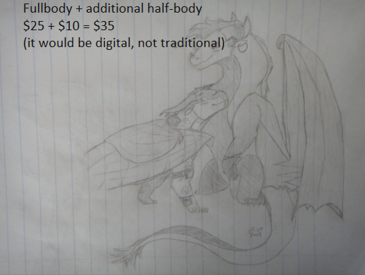
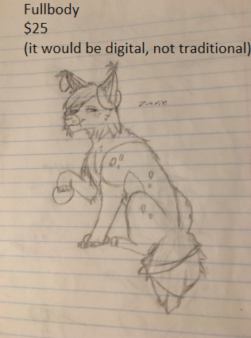
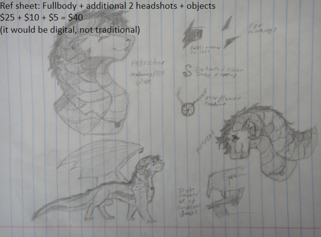
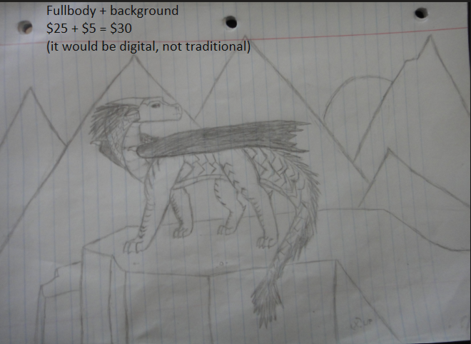

2 Headshots (Black & White) OR 1 Half-body (Black & White) $40
+$10 for each additional 2 headshots OR 1 half-body, +$5 for flat color, no background or simple pattern background is free, +$5 for background and/or objects (to be negotiated), tiers can be combined so +$15 for each additional fullbody.





1 Fullbody (Sketch, Black & White) $25
+$15 for each additional fullbody, +$5 for flat color, no background or simple pattern background is free, +$5 for background and/or objects (to be negotiated), tiers can be combined so +$10 for each additional 2 headshots OR 1 half-body